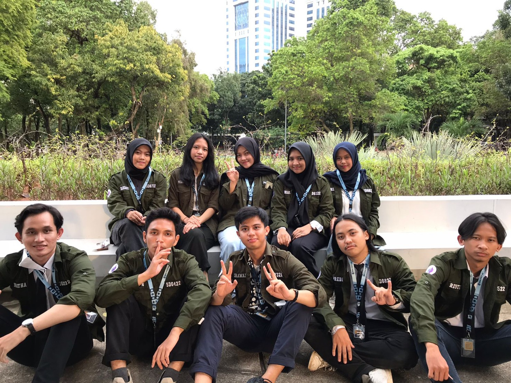
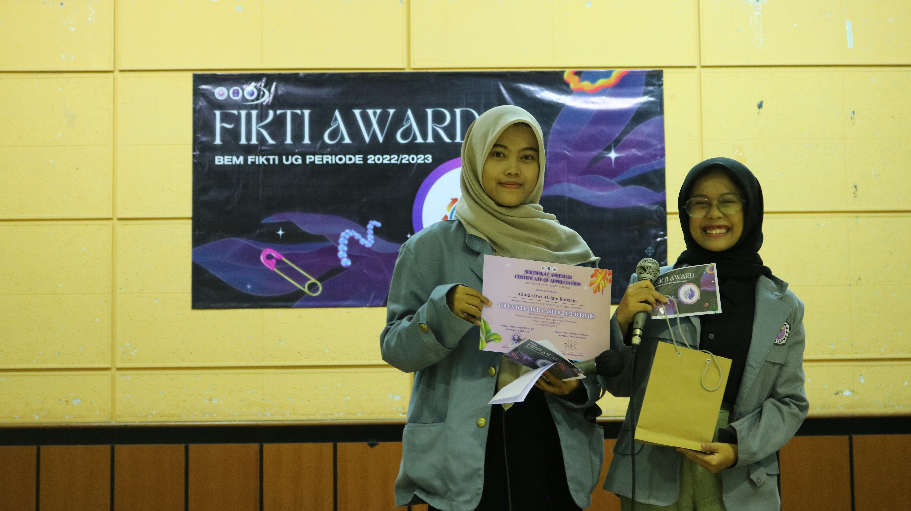
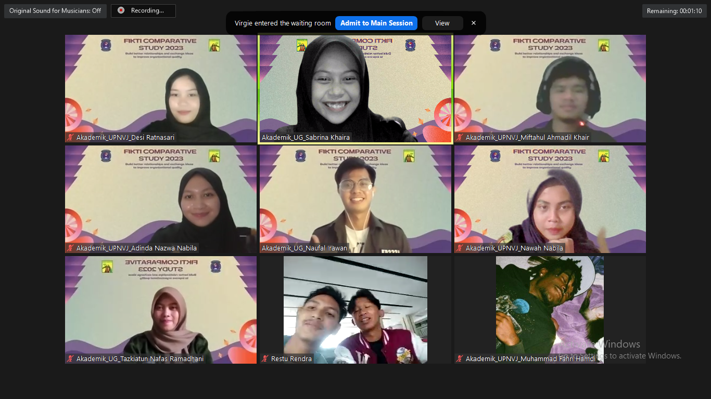

The Academic Department of BEM FIKTI Gunadarma University is responsible for designing programs that provide information and support the academic development of students from the Faculty of Computer Science and Information Technology. These programs include competitions, seminars, and workshops in the field of technology. I served as a staff member in the Academic Department and was appointed as the Head Organizer of FIKTI Career 2023, a large-scale self-development event attended by over 300 participants.
September 2022 – December 2023
Joined Academic Department of BEM FIKTI
Appointed as Head of FIKTI Career 2023
Coordinated speakers, logistics, and promotions
Held FIKTI Career Event with 300+ participants
This experience honed my leadership and organizational skills significantly. Leading a high-impact event helped me build confidence and improved my ability to work under pressure with diverse teams.